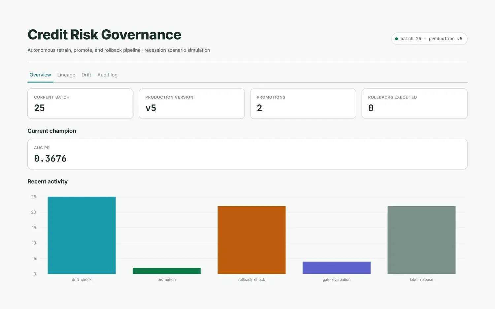
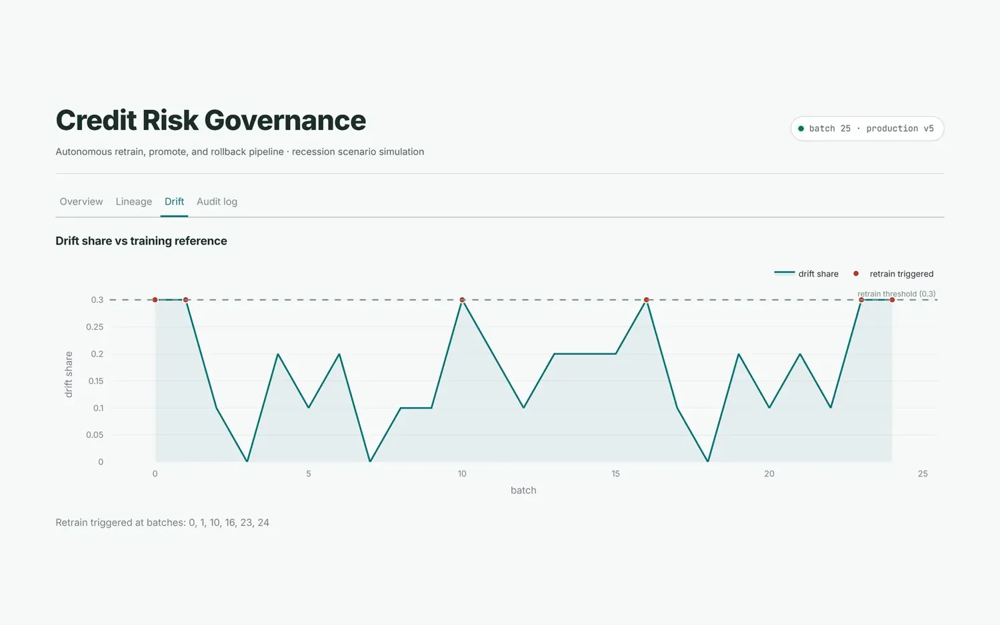
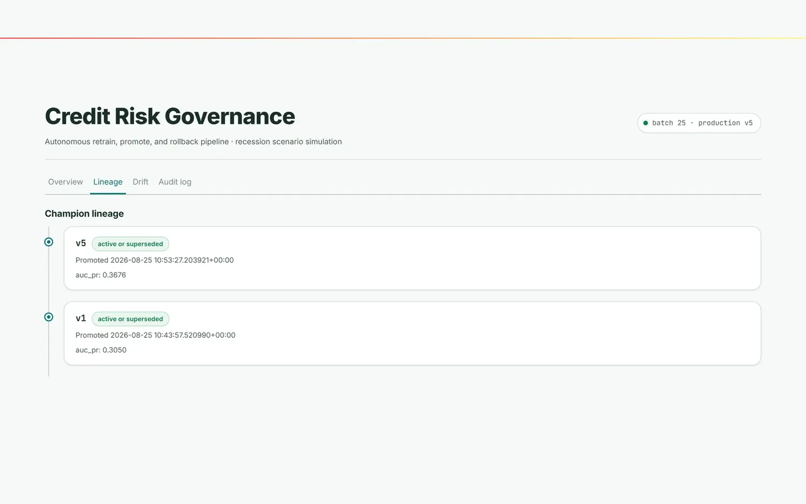
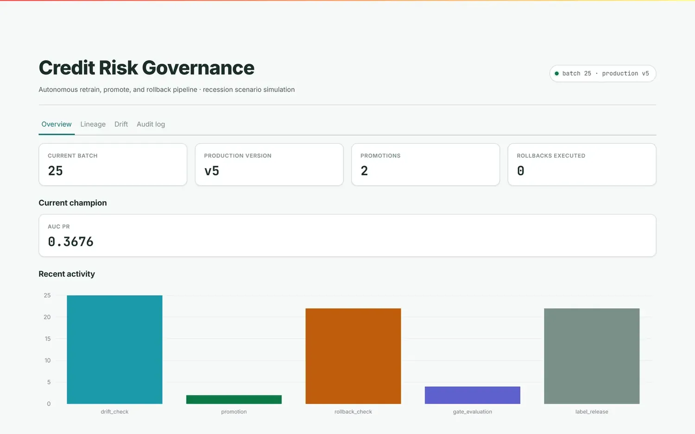

01
Continuous Credit Risk Governance Pipeline
A credit-risk classifier that governs itself. It scores a live batch, waits out a realistic label delay, watches for distribution drift, trains a challenger when the world moves, and promotes it only if the improvement survives a significance test. If the champion decays, it rolls itself back.
- 01637 batches of the Give Me Some Credit stream run on a GitHub Actions schedule with no human triggering a tick.
- 02Raising the drift-share threshold from 0.1 to 0.3 cut false retrains from roughly 40% of undrifted batches to about 1%, while still catching real injected drift.
- 03Promotion needs three gates: a 0.01 AUC-PR tolerance band, strict dominance, and McNemar, or a bootstrap CI when discordant pairs fall below 15.
- 04Rollback is held to the same bar. A 0.03 AUC-PR drop only counts once the bootstrap CI confirms it, and comparisons are suppressed when the reference window goes stale.
- 0554 tests across 8 files, including a fixed-seed challenger that looks better purely from small-sample noise and must be rejected.
AUC-PR over accuracy at a 6.7% positive rate. Every decision, including rejections and suppressions, lands in a Postgres audit log, not just the ones that changed something.
governance dashboard / overview




Overview: current champion, batch clock, promotions and rollbacks.